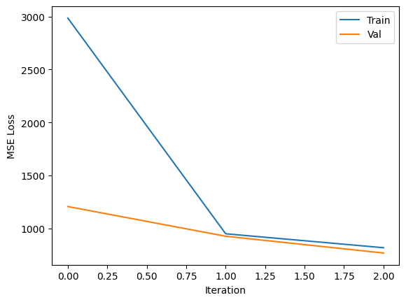
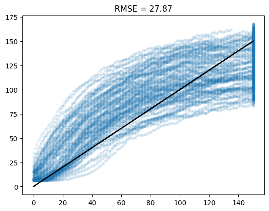
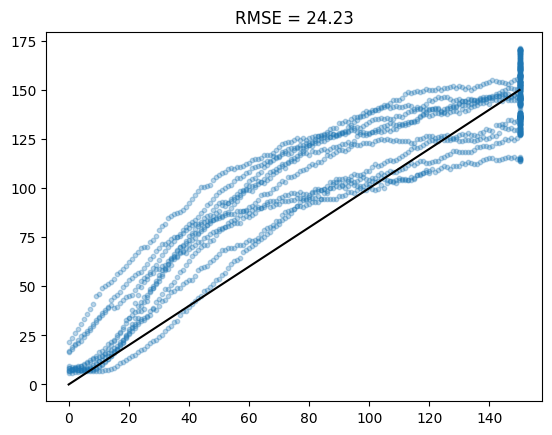
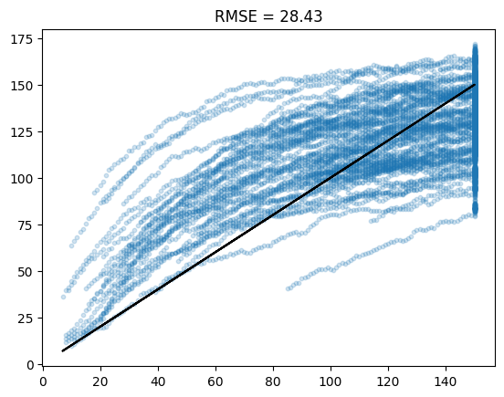
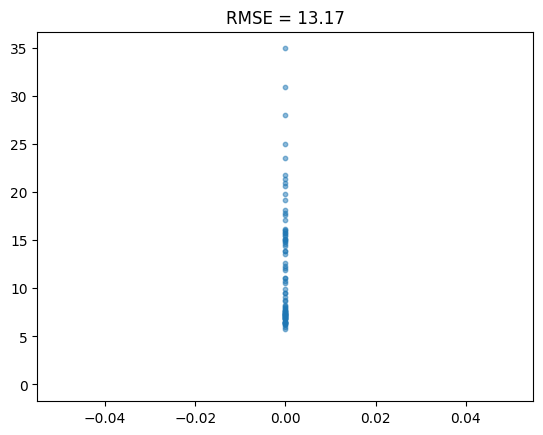
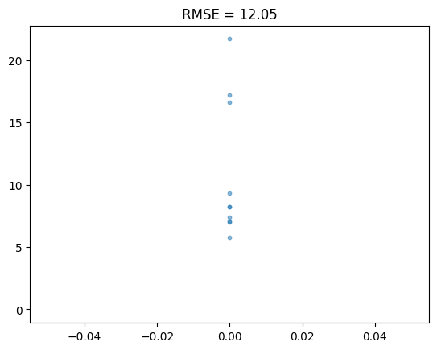
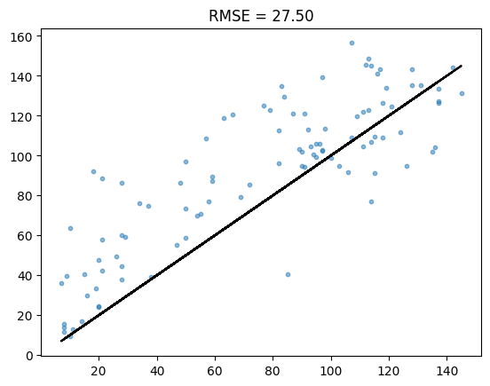

Packages#
import os
import torch
import torch.nn as nn
import torch.nn.functional as F
import numpy as np
import pandas as pd
import matplotlib.pyplot as plt
from tqdm import tqdm
from glob import glob
from sklearn.metrics import mean_squared_error
from torch.utils.data import Dataset, DataLoader
device = 'cuda' if torch.cuda.is_available() else 'cpu'
device
'cuda'
Data loading#
df = pd.read_parquet('https://drive.google.com/uc?export=download&id=1R7yQshjMkB2nFZ1OMM__EnIoKvihLrZq')
df.head()
| unit | cycle | cond_1 | cond_2 | cond_3 | sensor_1 | sensor_2 | sensor_3 | sensor_4 | sensor_5 | ... | sensor_17 | sensor_18 | sensor_19 | sensor_20 | sensor_21 | filename | group | RUL | cycle_max | split | |
|---|---|---|---|---|---|---|---|---|---|---|---|---|---|---|---|---|---|---|---|---|---|
| 0 | 1 | 1 | -0.0007 | -0.0004 | 100.0 | 518.67 | 641.82 | 1589.70 | 1400.60 | 14.62 | ... | 392.0 | 2388.0 | 100.0 | 39.06 | 23.4190 | train_FD001.txt | 1 | 191 | 192 | train |
| 1 | 1 | 2 | 0.0019 | -0.0003 | 100.0 | 518.67 | 642.15 | 1591.82 | 1403.14 | 14.62 | ... | 392.0 | 2388.0 | 100.0 | 39.00 | 23.4236 | train_FD001.txt | 1 | 190 | 192 | train |
| 2 | 1 | 3 | -0.0043 | 0.0003 | 100.0 | 518.67 | 642.35 | 1587.99 | 1404.20 | 14.62 | ... | 390.0 | 2388.0 | 100.0 | 38.95 | 23.3442 | train_FD001.txt | 1 | 189 | 192 | train |
| 3 | 1 | 4 | 0.0007 | 0.0000 | 100.0 | 518.67 | 642.35 | 1582.79 | 1401.87 | 14.62 | ... | 392.0 | 2388.0 | 100.0 | 38.88 | 23.3739 | train_FD001.txt | 1 | 188 | 192 | train |
| 4 | 1 | 5 | -0.0019 | -0.0002 | 100.0 | 518.67 | 642.37 | 1582.85 | 1406.22 | 14.62 | ... | 393.0 | 2388.0 | 100.0 | 38.90 | 23.4044 | train_FD001.txt | 1 | 187 | 192 | train |
5 rows × 31 columns
dev_df = df.query('split == "train"')
test_df = df.query('split == "test"')
train_df = dev_df.query('group == 1 and unit > 10')
val_df = dev_df.query('group == 1 and unit <= 10')
test_df = test_df.query('group == 1')
Exploratory Data Analysis#
# Add any EDA code here
Data Preprocessing#
def normalize_data(df, columns, data_max=None, data_min=None):
new_df = df.copy()
if data_max is None:
data_max = new_df[columns].max()
if data_min is None:
data_min = new_df[columns].min()
new_df.loc[:, columns] = (new_df[columns] - data_min)/(data_max - data_min)
new_df = new_df.fillna(0)
return new_df, data_max, data_min
experiment_columns = ['group', 'unit', 'cycle']
condition_columns = [f'cond_{i+1}' for i in range(3)]
sensor_columns = [f'sensor_{i+1}' for i in range(21)]
feature_columns = condition_columns + sensor_columns
column_names = feature_columns + experiment_columns
train_df_norm, data_max, data_min = normalize_data(train_df, feature_columns)
val_df_norm, _, _ = normalize_data(val_df, feature_columns, data_max, data_min)
test_df_norm, _, _ = normalize_data(test_df, feature_columns, data_max, data_min)
Modelling#
Pytorch Dataloader#
class TimeSeriesDataset(Dataset):
def __init__(self, df, feature_columns, unit_column, group_column, target_column, sequence_length=30, step_size=1):
self.df = df.copy()
self.feature_columns = feature_columns
self.unit_column = unit_column
self.group_column = group_column
self.target_column = target_column
self.sequence_length = sequence_length
self.step_size = step_size
# Group by unit and group
self.grouped_data = self.df.groupby([group_column, unit_column])
# Store the start indices for each unit's sequences
self.indices = self._compute_indices()
def _compute_indices(self):
"""
Computes start indices for each unit's time series, based on the step size and sequence length.
"""
indices = []
for (group, unit), unit_data in self.grouped_data:
unit_data_length = len(unit_data)
# Compute the valid start indices for each time series
num_samples = (unit_data_length - self.sequence_length) // self.step_size + 1
for i in range(num_samples):
start_idx = i * self.step_size
indices.append((group, unit, start_idx))
return indices
def __len__(self):
return len(self.indices)
def __getitem__(self, idx):
"""
Retrieves the sample at the given index. Dynamically extracts the sequence from the data.
"""
group, unit, start_idx = self.indices[idx]
unit_data = self.grouped_data.get_group((group, unit)) # Retrieve the specific time series
# Extract the features for the sequence
features = unit_data[self.feature_columns].values[start_idx:start_idx + self.sequence_length].T
rul = unit_data[self.target_column].values[start_idx + self.sequence_length - 1].astype(int)
return torch.tensor(features, dtype=torch.float32), torch.tensor(min(150,rul.item()), dtype=torch.float32)
sequence_length = 30
train_dataset = TimeSeriesDataset(train_df_norm, feature_columns, 'unit', 'group', 'RUL', sequence_length)
val_dataset = TimeSeriesDataset(val_df_norm, feature_columns, 'unit', 'group', 'RUL', sequence_length)
test_dataset = TimeSeriesDataset(test_df_norm, feature_columns, 'unit', 'group', 'RUL', sequence_length)
train_loader = DataLoader(train_dataset, batch_size=512, shuffle=True)
val_loader = DataLoader(val_dataset, batch_size=512, shuffle=False)
test_loader = DataLoader(test_dataset, batch_size=512, shuffle=False)
ANN Models#
class LSTMModel(nn.Module):
def __init__(self, input_channels, sequence_length=30, hidden_size=64):
super(LSTMModel, self).__init__()
self.lstm = nn.LSTM(
input_size=input_channels,
hidden_size=hidden_size,
num_layers=1,
batch_first=True,
dropout=0.0,
bidirectional=False
)
self.fc1 = nn.Linear(hidden_size, hidden_size)
self.fc2 = nn.Linear(hidden_size, 1)
def forward(self, x):
x = x.transpose(1, 2)
lstm_out, (hn, cn) = self.lstm(x)
x = lstm_out[:, -1, :]
x = F.relu(self.fc1(x))
x = self.fc2(x)
return x
class MLPModel(nn.Module):
def __init__(self, input_channels, sequence_length=30, hidden_size=128):
super(MLPModel, self).__init__()
self.fc1 = nn.Linear(input_channels * sequence_length, hidden_size)
self.fc2 = nn.Linear(hidden_size, hidden_size)
self.fc3 = nn.Linear(hidden_size, 1)
def forward(self, x):
x = x.view(x.size(0), -1)
x = F.relu(self.fc1(x))
x = F.relu(self.fc2(x))
x = self.fc3(x)
return x
Training and Evaluation Loops#
def train_epoch(model, loader, criterion, optimizer, device):
model.train()
epoch_loss = 0.0
for i, (inputs, labels) in enumerate(loader):
# Forward pass
outputs = model(inputs.to(device))
loss = criterion(outputs, labels.unsqueeze(-1).to(device))
# Backward pass and optimization
optimizer.zero_grad()
loss.backward()
optimizer.step()
# Loss logs
epoch_loss += loss.item()/len(loader)
return epoch_loss
@torch.no_grad()
def validate_epoch(model, loader, criterion, device):
model.eval()
epoch_loss = 0.0
for i, (inputs, labels) in enumerate(loader):
# Forward pass
outputs = model(inputs.to(device))
loss = criterion(outputs, labels.unsqueeze(-1).to(device))
# Loss logs
epoch_loss += loss.item()/len(loader)
return epoch_loss
# model = LSTMModel(input_channels=len(feature_columns), sequence_length=sequence_length).to(device)
model = MLPModel(input_channels=len(feature_columns), sequence_length=sequence_length).to(device)
criterion = nn.MSELoss()
optimizer = torch.optim.Adam(model.parameters(), lr=0.01)
epochs = 3
train_epoch_loss = []
val_epoch_loss = []
for epoch in tqdm(range(epochs), total=epochs):
model.train()
train_loss = train_epoch(model, train_loader, criterion, optimizer, device)
val_loss = validate_epoch(model, val_loader, criterion, device)
train_epoch_loss.append(train_loss)
val_epoch_loss.append(val_loss)
print(f'Epoch [{epoch+1}/{epochs}], Train Loss: {train_loss:.4f}, Val Loss: {val_loss:.4f}')
plt.plot(train_epoch_loss)
plt.plot(val_epoch_loss)
plt.xlabel('Iteration')
plt.ylabel('MSE Loss')
plt.legend(['Train', 'Val'])
plt.show()
33%|███▎ | 1/3 [00:25<00:50, 25.24s/it]
Epoch [1/3], Train Loss: 2984.2286, Val Loss: 1207.0575
67%|██████▋ | 2/3 [00:50<00:25, 25.03s/it]
Epoch [2/3], Train Loss: 950.1529, Val Loss: 926.9662
100%|██████████| 3/3 [01:15<00:00, 25.10s/it]
Epoch [3/3], Train Loss: 818.6079, Val Loss: 768.6407

Evaluation on Full Unit#
@torch.no_grad()
def evaluate_full(model, loader, device):
model.eval()
labels = []
predictions = []
for i, (inputs, targets) in enumerate(loader):
# Forward pass
outputs = model(inputs.to(device))
labels.extend(targets.tolist())
predictions.extend(outputs.detach().cpu().tolist())
return labels, predictions
y_train, yh_train = evaluate_full(model, train_loader, device)
plt.scatter(y_train, yh_train, s=10, alpha=0.1)
plt.plot(y_train, y_train, 'k')
plt.title(f'RMSE = {np.sqrt(mean_squared_error(y_train, yh_train)):.2f}')
plt.show()

y_val, yh_val = evaluate_full(model, val_loader, device)
plt.scatter(y_val, yh_val, s=10, alpha=0.3)
plt.plot(y_val, y_val, 'k')
plt.title(f'RMSE = {np.sqrt(mean_squared_error(y_val, yh_val)):.2f}')
plt.show()

y_test, yh_test = evaluate_full(model, test_loader, device)
plt.scatter(y_test, yh_test, s=10, alpha=0.2)
plt.plot(y_test, y_test, 'k')
plt.title(f'RMSE = {np.sqrt(mean_squared_error(y_test, yh_test)):.2f}')
plt.show()

Evaluation on Last Cycle of Each Unit#
@torch.no_grad()
def evaluate_last_cycle(model, dataframe, device, feature_columns):
model.eval()
labels = []
predictions = []
for unit in dataframe.unit.unique():
df_unit = dataframe.query(f'unit == {unit}')
unit_dataset = TimeSeriesDataset(df_unit, feature_columns, 'unit', 'group', 'RUL')
X, y = unit_dataset[-1]
y_pred = model(X.unsqueeze(0).to(device))
labels.append(y.item())
predictions.append(y_pred.detach().cpu().item())
return labels, predictions
y_train, yh_train = evaluate_last_cycle(model, train_df_norm, device, feature_columns)
plt.scatter(y_train, yh_train, s=10, alpha=0.5)
plt.plot(y_train, y_train, 'k')
plt.title(f'RMSE = {np.sqrt(mean_squared_error(y_train, yh_train)):.2f}')
plt.show()

y_val, yh_val = evaluate_last_cycle(model, val_df_norm, device, feature_columns)
plt.scatter(y_val, yh_val, s=10, alpha=0.5)
plt.plot(y_val, y_val, 'k')
plt.title(f'RMSE = {np.sqrt(mean_squared_error(y_val, yh_val)):.2f}')
plt.show()

y_test, yh_test = evaluate_last_cycle(model, test_df_norm, device, feature_columns)
plt.scatter(y_test, yh_test, s=10, alpha=0.5)
plt.plot(y_test, y_test, 'k')
plt.title(f'RMSE = {np.sqrt(mean_squared_error(y_test, yh_test)):.2f}')
plt.show()
